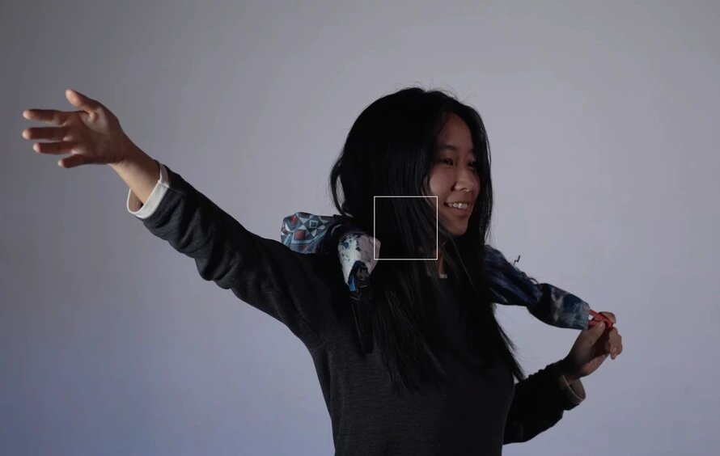
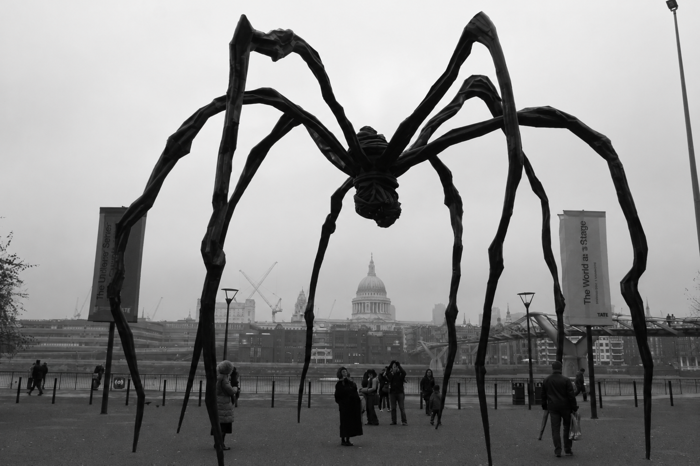
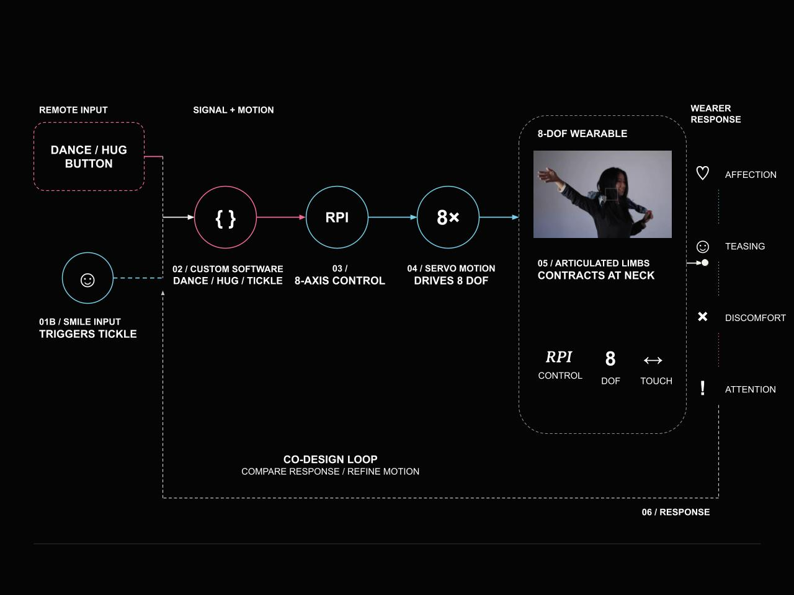

Tether
A remotely actuated robotic wearable investigating how a mechanical embrace mediates care, discomfort, and bodily agency across distance.
Overview
How might a wearable robot translate a loved one’s remote gesture into a felt sense of presence?
This project grew from my experience living across continents, separated from my family by geography and time zones. The neck pillow I carried on repeated journeys of more than twenty hours became a starting point: an intimate object that supports the body while accompanying the experience of distance.
Louise Bourgeois’s Maman influenced the wearable’s form. I was drawn to how its spider-like body suggests both maternal protection and unease. Its enveloping structure informed Tether’s articulated wooden limbs. Worn around the neck, they bring this tension close to the body: an enclosing movement might resemble an embrace, while also making the wearer aware that someone else has initiated the contact.

I developed an eight-degree-of-freedom mechanism using servo motors, handcrafted wooden components, fabric, and custom software. Its limbs contract and extend around the neck. I explored two ways for my mother to activate it:
| Interaction | Robotic response | Question it opens |
|---|---|---|
| She presses “dance”/ “hug” on a remote interface. | The wearable performs a choreographed movement sequence. | What does she intend to communicate by choosing when to send a movement? |
| The system detects her smile. | The wearable performs a tickling movement. | How does linking an expression to touch affect the experience of giving and receiving it? |
Dimensions: 23.6 × 5.9 × 4.7 inches when extended; dimensions vary during contraction.
Technical Workflow

Demo Videos
Final demo.
First iteration.